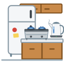
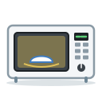

Unit 21
廚房電器Kitchen Appliances
雪櫃 微波爐 焗爐 電飯煲 in the 廚房: what each one is for, 用 + appliance + verb (用水煲煲水), how long after the verb (叮兩分鐘), and 放入 / 攞出.

LearnIn the kitchen
Appliances; 一部 and 一個; 叮 煲 炒; 用 + appliance + verb; 叮兩分鐘; in and out, on and off.

GameKitchen Helper
Find the appliance for the job, say what each one is for, and catch how long to cook things.
GameWrite It
Write 用, 入 and 電 stroke by stroke with your finger: trace, then from memory, then 默書 from what you hear.
WritingWriting Sheet
Print a practice sheet: each character stroke by stroke in Hong Kong order, to trace and then write.
GameTone Detective
Hear appliances and kitchen words and pick their tones. 叮 or 煲?
SpeakingSay It Back
Record yourself and compare your tones with a native speaker's pitch curve.